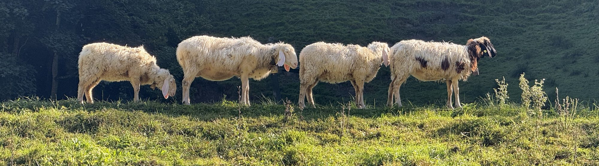
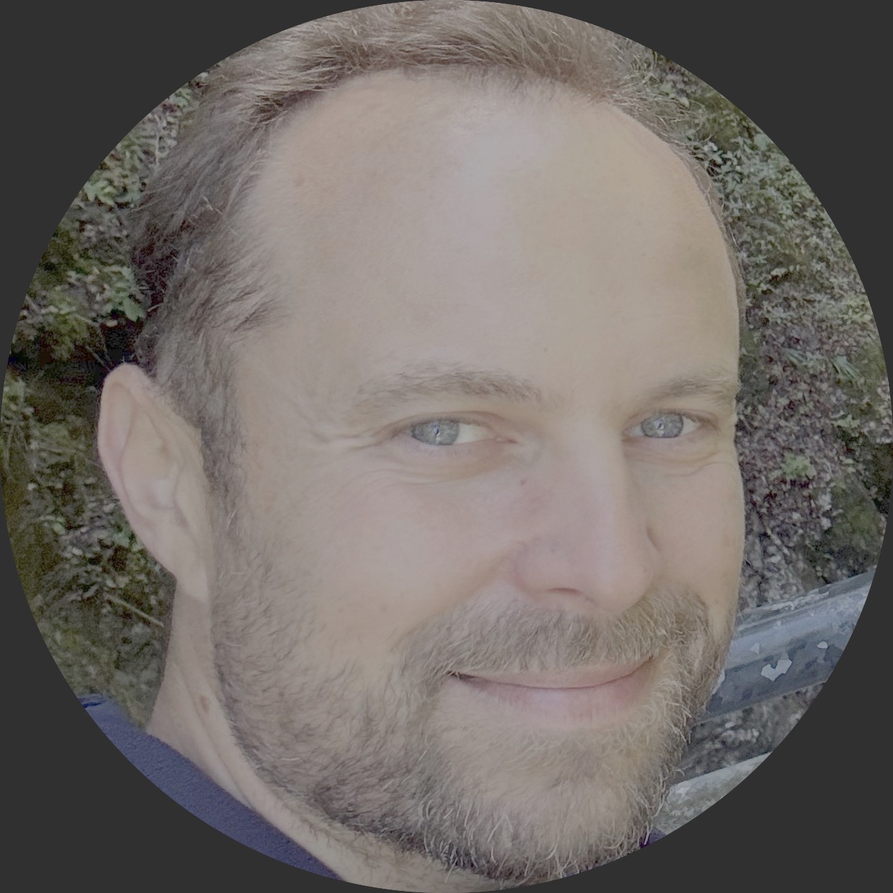

IT, Software &
Digital Media
Dmitry Korotkiy, Ismaning bei München

Leistungen
IT
Beratung und Unterstützung bei IT-Fragen für Selbstständige und kleine Unternehmen.
Software
Entwicklung von Software und Apps, zum Beispiel native macOS-Anwendungen und Webseiten.
Digital Media
Digitale Inhalte und Auftritte für Webseiten und Online-Kanäle.
Jedes Projekt beginnt mit einem Gespräch über Ziel, Umfang und Aufwand. Schreib mir kurz, worum es geht.
Über mich

Hi, ich bin Dmitry – selbstständiger Softwareentwickler aus Ismaning bei München. Ich entwickle native, datenschutzfreundliche macOS-Tools und Web-Tools, die den Computeralltag aufgeräumter und effizienter machen.
Eigene Projekte
DiaDisk
Speicheranalyse für den Mac: zeigt in sechs interaktiven Ansichten, was die Festplatte füllt. Nativ für Apple Silicon, 100 % lokal, ohne Konto und ohne Cloud.
DiaDisk ansehenDomain at Call
Prüft, ob Domainnamen frei sind: als Web-Tool im Browser. Ohne Konto, ohne Tracking.
Web-Tool öffnenKontakt
E-Mail: info@dk-ai.de
Telefon: +49 151 50 111 317
Dmitry Korotkiy – IT, Software & Digital Media
Adalperostr. 70, 85737 Ismaning
Services
IT
Advice and support on IT questions for freelancers and small businesses.
Software
Development of software and apps, for example native macOS applications and websites.
Digital Media
Digital content and presences for websites and online channels.
Every project starts with a conversation about goal, scope and effort. Send me a short note about what you need.
About me
Hi, I’m Dmitry – an independent software developer based in Ismaning near Munich, Germany. I build native, privacy-first macOS utilities and web tools designed to make everyday computing cleaner and more efficient.
Own projects
DiaDisk
Storage analysis for the Mac: shows what fills your drive in six interactive views. Native for Apple Silicon, 100 % local, no account and no cloud.
View DiaDiskDomain at Call
Checks whether domain names are available: as a web tool in your browser. No account, no tracking.
Open the web toolContact
Email: info@dk-ai.de
Phone: +49 151 50 111 317
Dmitry Korotkiy – IT, Software & Digital Media
Adalperostr. 70, 85737 Ismaning, Germany
Услуги
IT
Консультации и поддержка по вопросам IT для фрилансеров и малого бизнеса.
Software
Разработка программ и приложений, например нативных приложений для macOS и веб-сайтов.
Digital Media
Цифровой контент и онлайн-присутствие для веб-сайтов и онлайн-каналов.
Каждый проект начинается с разговора о цели, объёме и трудозатратах. Напишите мне коротко, что вам нужно.
Обо мне
Привет, я Дмитрий – независимый разработчик программного обеспечения из Исманинга близ Мюнхена (Германия). Я создаю нативные macOS-утилиты и веб-инструменты с упором на конфиденциальность, которые делают повседневную работу за компьютером чище и эффективнее.
Собственные проекты
DiaDisk
Анализ дискового пространства для Mac: шесть интерактивных видов показывают, что занимает место на диске. Нативно для Apple Silicon, 100 % локально, без учётной записи и без облака.
Открыть DiaDiskDomain at Call
Проверяет, свободны ли доменные имена: как веб-инструмент в браузере. Без учётной записи и без отслеживания.
Открыть веб-инструментКонтакты
Эл. почта: info@dk-ai.de
Телефон: +49 151 50 111 317
Dmitry Korotkiy – IT, Software & Digital Media
Adalperostr. 70, 85737 Ismaning, Германия